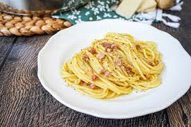

Classic Spaghetti Carbonara

Description
Spaghetti is a long, thin pasta that is a staple in Italian cuisine and enjoyed worldwide. Made from durum wheat semolina, spaghetti is typically boiled until al dente, meaning it is cooked just enough to retain a firm texture while being tender to the bite. Its elongated shape allows it to be easily twirled around a fork, making it a popular choice for various sauces and toppings. Spaghetti pairs well with a wide range of sauces, from simple marinara or carbonara to more complex meat or seafood-based sauces. Its versatility, quick cooking time, and delicious taste make spaghetti a favorite dish for both home cooks and chefs alike.
Ingredients
- Spaghetti
- Bacon or pancetta
- Eggs
- Parmesan cheese
- Garlic
- Olive oil
- Salt
- Black pepper
Steps
- Cook spaghetti according to package instructions until al dente.
- In a skillet, cook chopped bacon or pancetta until crispy. Add minced garlic and cook until fragrant.
- In a bowl, whisk together eggs, grated Parmesan cheese, salt, and black pepper.
- Drain cooked spaghetti and add it to the skillet with the bacon.
- Remove skillet from heat and quickly stir in the egg and cheese mixture, allowing the residual heat to cook the eggs and create a creamy sauce.
- Serve immediately, garnished with additional Parmesan cheese and black pepper if desired.